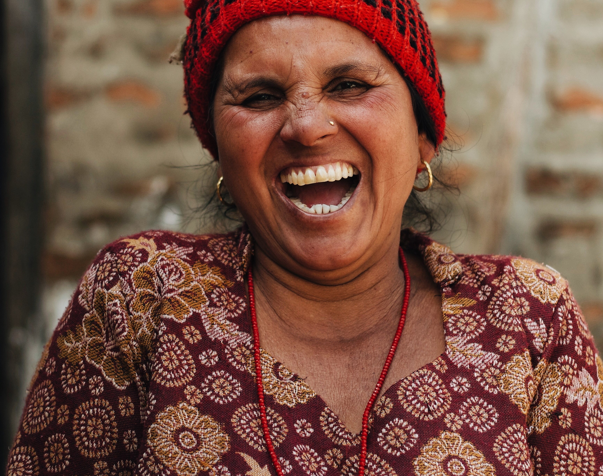

.jpg)
and time was running out. Mr. Wright’s neck, chest, abdomen, armpits, and groin were filled with tumors the size of oranges, his spleen and liver were enlarged, and his cancer was causing his chest to fill up with two quarts of milky fluid every day, which had to be drained in order for him to breathe. Dr. West didn’t expect him to last a week. But Mr. Wright desperately wanted to live, and he hung his hope on a promising new drug called Krebiozen. He begged his doctor to treat him with the new drug, but the drug was only being offered in clinical trials to people who were believed to have at least three months left to live. Mr. Wright was too sick to qualify. But Mr. Wright didn’t give up. Knowing the drug existed and believing the drug would be his miracle cure, he pestered his doc until Dr. West reluctantly gave in and injected him with Krebiozen on a Friday. To his utter shock, the following Monday, Dr. West found his patient walking around out of bed. Mr. Wright’s “tumor masses had melted like snowballs on a hot stove” and were half their original size. Ten days after the first dose of Krebiozen, Mr. Wright left the hospital, apparently cancer free. Mr. Wright was rockin’ and rollin’, praising Krebiozen as a miracle drug for two months until the scientific literature began reporting that Krebiozen didn’t seem to be effective. Mr. Wright, who trusted what he read in the literature, fell into a deep depression, and his cancer came back. This time, Dr. West, who genuinely wanted to help save his patient, decided to get sneaky. He told Mr. Wright—that some of the initial supplies of the drug had deteriorated during shipping, making them less effective, but that he scored a new batch of highly concentrated, ultra-pure Krebiozen, which he could give him. (Of course, this was a bold-faced lie.) Dr. West then injected Mr. Wright with nothing but distilled water. And a seemingly miraculous thing happened – again. The tumors melted away, the fluid in his chest disappeared, and Mr. Wright was feeling great again for another two months. Then the American Medical Association blew it by announcing that a nationwide study of Krebiozen proved that the drug was utterly worthless. This time, Mr. Wright lost all faith in his treatment. His cancer came right back, and he died two days later.
.jpg)
"What happen when people open their hearts?They get better".
-Haruki Murakami
.jpg)
“Letting ourselves be forgiven is one of the most difficult healings we will undertake. And one of the most fruitful.”
― Stephen Levine

“Life becomes easier when you learn to accept an apology you never got.”
― Robert Brault
.jpg)
.jpg)
.jpg)
.jpg)